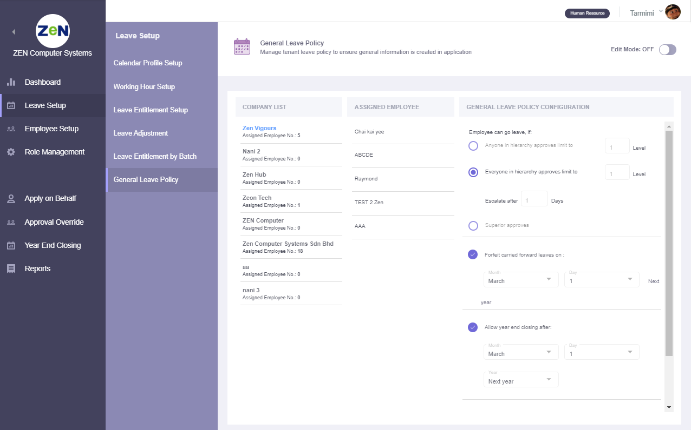

administration¶
Admin Dashboard¶
This page will show the details of latest announcement created by administrator and upcoming holiday, birthday, new joiner & leaver. There will be a long leave reminder information too. Administrator able to manage announcement by create, edit and delete features.
Create announcement
Click the Create New button to write new announcement.

Edit announcement
Click the edit icon of the selected announcement to do the changes.

Delete
Click the delete icon to remove unwanted announcement.
Leave Setup¶
Calendar Profile Setup¶
Create specific public holiday and rest day for employee.

There have few features as listed here:
Create new calendar
Edit calendar profile name, rest day & public holiday
Delete calendar profile
Assign user by using drag & drop individual or bulk
Set as new default calendar profile
Working Hour Profile Setup¶
Create office working hour for employee

There have few features can be used after toggle Edit Mode to ON as listed here:
Create new working hour profile
Edit working hour profile name, working hour (full day, half day, quarter day)
Delete working hour profile
Assign user to desired profile by using drag & drop individual or bulk
Set as new default working hour profile
Leave Entitlement Setup¶
Create & define master list for all type of leave

The default leave type & leave entitlement profile will be created after administrator account signed up. Leave entitlement setup started after Edit Mode toggle button was turn ON.
Create New Leave Type & New Leave Entitlement Profile
Click on the Create New button to create new leave type abbreviation & leave type name. Then, click the Create button to proceed for leave entitlement profile creation. Enter profile name & entitlement description and click Add button to complete creation process.
Add/Edit/Delete Leave Type & Entitlement Profile
Click on the pencil icon at the overview page to Edit Data or Clone Existing Data. In Edit Data tab, you’re able to edit leave type abbreviation & leave type name. Leave entitlement profile name & description can be edited and profile can be added or deleted. Click Save button to save all edited data.
Leave Type Configuration
Select the desired entitlement profile and configure the setting in the Leave Type Configuration tab.
Leave Entitlement level
Default level 1 is created automatically. You’re able to edit the service year data, entitled day & bring forward value. You can create new level for senior and delete unwanted level data.
- NOTE:
At least one leave entitlement level must be saved
Toggle Off Edit Mode
Lastly, toggle off the Edit Mode button at the top-right corner to save all the leave type configuration & leave entitlement level data.
Leave Adjustment¶
A section to edit and adjust the leave entitlement number of days for selected employee

In Details tab, select desired company and department to check the employee list in right hand side tab. Continue select the desired leave type to see employee entitlement number of days. Select plus(+) or minus(-) symbol and key in number of days to adjust. Lastly, enter reason for this adjustment and remember to tick on the employee before click Submit button to complete.
You can check the leave adjustment history by clicking on the button at the top-right corner.
Leave Entitlement By Batch¶
A section to assign leave entitlement to selected employees
In Details tab, select desired company and department list to see employee list in right hand side tab. Select leave type and entitlement code/profile filtered by selected leave type. Tick the employees to be assigned under this leave entitlement. Click on Submit button to complete.
General Leave Policy¶
Manage tenant leave policy to ensure general information is created in application
View assigned employee list and general leave policy configuration by clicking on the company name. To enable edit mode, toggle the Edit Mode button at the top-right corner to ON. The setup features including:
Create New Company
Click on the add icon at the Company List tab. Fill in the new company name in the slide-in menu and click on Create button to complete creation.
Edit Company Name
Click on the edit icon to modify company name in the slide-in menu. Complete process by clicking on Update button while cancel changes by clicking outside of the slide-in menu.
Delete Company Name with Its General Leave Policy Configuration
Click on the trash icon to delete the unwanted company and its policy.
- NOTE:
Please re-assign all the employees under that (to be delete) company before delete. To re-assign employee please go to Employee Setup page.
Edit General Leave Policy Configuration
Simply change the general leave policy configuration of the selected company when the Edit Mode is ON. Toggle OFF Edit Mode to save the changes of the configuration.
Employee Setup¶
Create and manage user profile details for all company

View basic information of all employee at the left-side table list. Check each employee personal details, employment details, calendar, working hour, leave entitlement, employee role & emergency contact, family information and education certification at right-side column. Find specific employee through the searchbar and filter function. Administrator able to change user profile picture by clicking on the camera icon. Change employee status from Active to Inactive or vice versa at the toggle button under Employee Status toggle button. There have few features when the Edit Mode is toggle ON:
Edit Personal Details
Employee full name, personal & work email address and NRIC is mandatory to fill up before save. Others personal details is allow to leave empty and let employee to fill up by their own.
- NOTE:
Birthdate, NRIC, gender, nationality and race is not allowed to edit by employee. Only administrator have the rights to edit them.
Edit Employment Details
Assign Calendar, Working Hour & Leave Entitlement
Assign Employee Role
Edit Emergency Contact, Family Information, Education & Certification
Role Management¶
Create the user role and the configuration based on their access level

View the roles list and its access level that assigned to the employee. There have few features of role management setup when the Edit Mode toggle button is turned ON.
Create New Role/Clone Existing Role Data
Click on the add icon at the Role Details tab. Choose Create New or Clone Existing Data tab to continue.
Create New - Fill in the role name and description for the new role. Tick set as default profile will replace original default profile. Then, click Create button to complete creation.
Clone Existing Data - Tick a role profile that you wish to clone then click on Create button to copy this role profile data. Newly clone role will appear in Role Details list with a (copy) behind the original role name.
Edit Role
Click on the edit icon in Role Details list. From slide-in menu, edit the role name or description and click Update button.
Delete Role
Click on the trash icon to delete role from the list.
- NOTE:
Please re-assign all the employees under that (to be delete) role before delete. Refer item no.5 below to check on how to re-assign employee.
Set as New Default Profile
Shaded star icon is the current default profile. You may change it by clicking on other non-shaded star icon and click Yes button in the confirmation pop-up to replace original role.
Re-assign Employee to another Role Profile
Select a role profile with assigned employee. To move only one employee, drag at the nine-dots icon of employee name box and drop into the role profile box you wish to move; To move multiple of employees, tick on the employees and click on ellipses(three-dots) icon then select the role profile you wish to move.
Edit Leave Setup, Leave Management, Profile Management, Calendar & Report Access Level
Edit the access level for all field of setup by tick or untick and choose selection level for the ticked checkbox. Toggle OFF Edit Mode to save all the access level changes.
Apply On Behalf¶
A section for administrator to apply on behalf for any type of leave for employee

View employee list and their entitlement at the left-side column. Filter employee name/department or company from the searchbar to find employee. Tick one or multiple employee to configure leave types & duration at the right-side column. The configuration for leave types & duration column consists of:
Select leave type and number of days available is displayed (is hidden when more than one employee is selected)
Choose the start date and end date. Then, configure day selection (Full Day, Half Day, Quarter Day) of each date
Upload attachment (eg: medical leave certificate) is optional
Enter the reason for apply on behalf
Click on the Submit button to complete the application
Check the history application by clicking on the View Apply On Behalf History button at the top-right corner.
Approval Override¶
Override leave application status for employee

View the employee leave application details at the left-side column. Filter the employee name/department or company to get employee you wish to find.
Tick Cancel/Reject/Approve checkbox for the approval action
Enter reason for the approval
Click on the Submit button to complete approval
Year End Closing¶
Year End Closing is a setup to clear the leave in a current year to close account for all employee

View company list and check its action needed before closing. The action needed are:
Clear the pending leave
Backup or print the necessary report for documentation
Update or manage resigned employee
Click on the required Take Action button to route to the Approval Override page, Reports page or Employee Setup page.
Lastly, default closing year is selected automatically. Click on the Submit button to complete year end closing process.
- NOTE:
If no default closing year is selected, administrator need to wait until the next available closing date as shown below the closing year selection is reached.
Reports¶
Produce reports for individual and group. Simply select report & leave types, then proceed with select employee
Steps to produce a report table:
Select report types
Select leave types to show in a report
To find employee. Filter employee or ID, company, department, branch or cost centre
Tick employee
Click Produce Report button. Select Group By company, department, branch, cost centre or no grouping option
Preview report table for All and other grouped data
Select Save as PDF or CSV for all grouped data at top-right corner table
Click Back To Main button to create another report. Repeat step 1 to 7